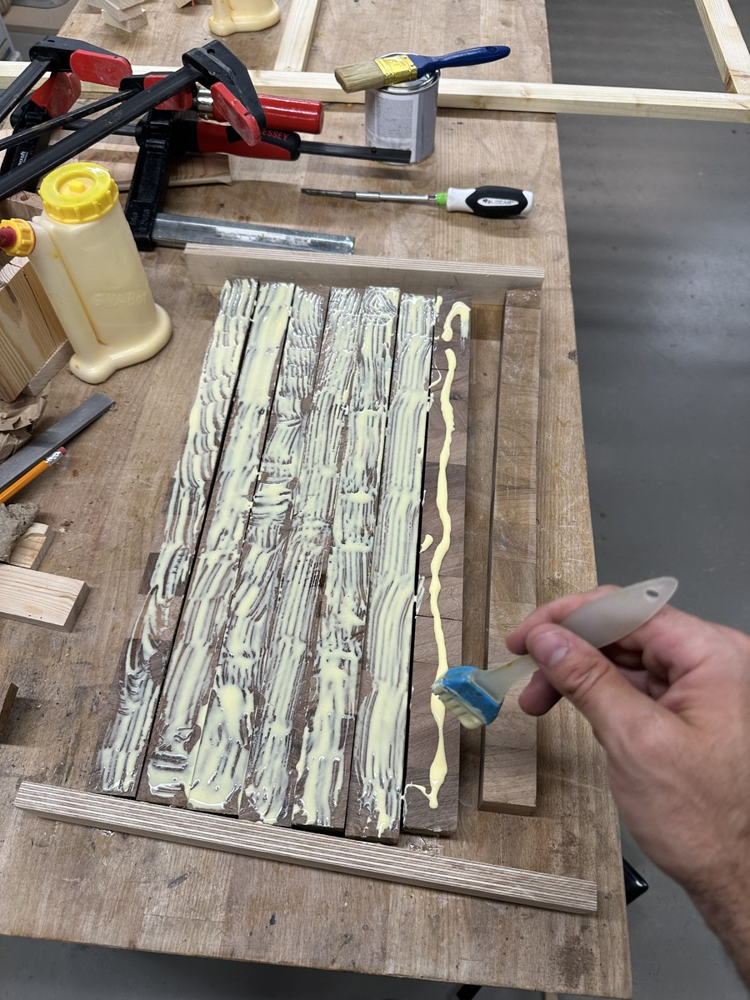
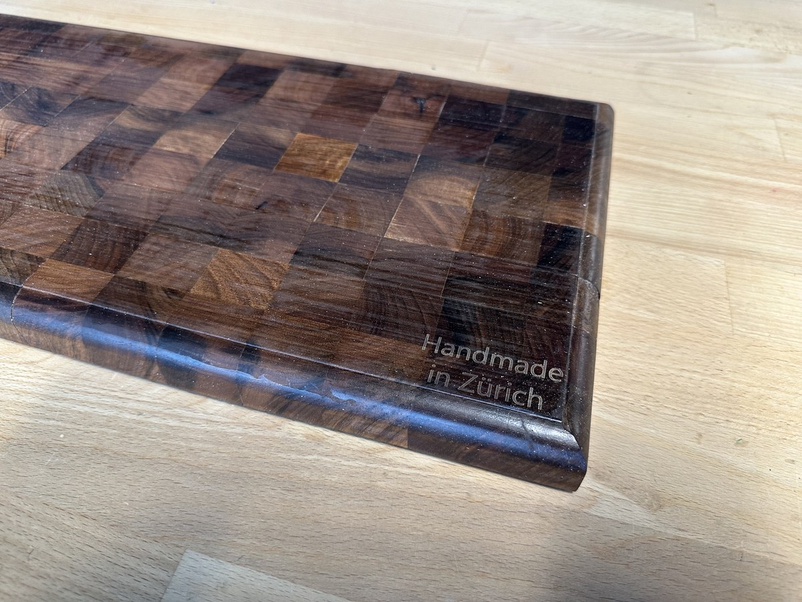
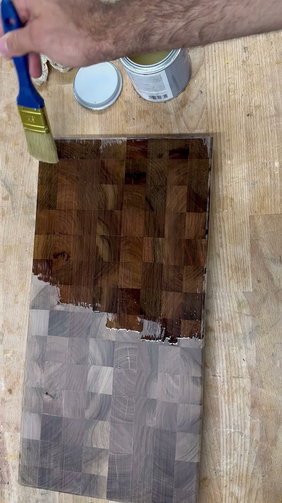
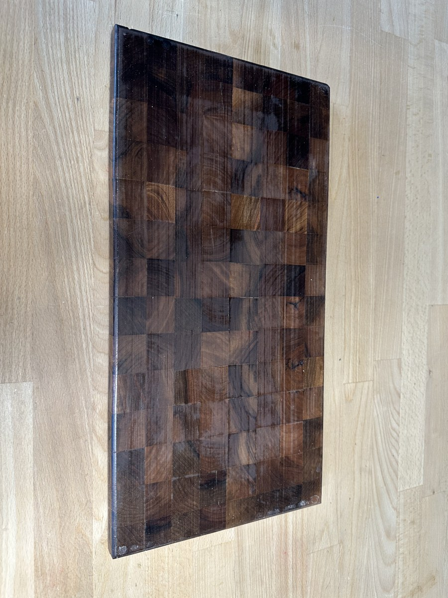

Projekt 05 • Echtes Hirnholz-Erbstück / Profi-Hackblock
Massives Schweizer Walnuss Hirnholz-Schneidebrett
Ein detaillierter Schritt-für-Schritt-Baubericht eines 45 cm × 27 cm × 2,5 cm grossen Hirnholz-Hackblocks aus europäischem Nussbaum (Juglans regia). Konstruiert mit stehenden Holzfasern zum Schutz fein geschliffener Kochmesser, gefertigt mit Verleimzulagen für exakte Flucht, mit umlaufend eingefräster Saftrille und dem gelaserten Atelier-Siegel «Handmade in Zürich».
Projektspezifikationen & Werkstatt-Parameter
Endmasse
45,0 cm Länge × 27,0 cm Breite × 2,5 cm Stärke (Masse: ca. 3,1 kg)
Faserausrichtung
Echte Hirnholz-Matrix — Stehende Kapillarröhren an der Arbeitsfläche für selbstheilende Klingenfreundlichkeit
Klötzchen-Anzahl & Anordnung
135 einzelne Klötzchen in einem Raster aus 15 Spalten × 9 Reihen (jeder Würfel ca. 30 mm × 30 mm × 25 mm)
Holzart
Schweizer / Europäischer Nussbaum (Juglans regia), erstklassiges dichtes Kernholz
Schwund- & Quellkompensation
Abwechselnde Ausrichtung der Jahresringe (gegeneinander gerichtete Wuchsbiegung) zur Neutralisierung saisonaler Holzfeuchteänderungen
Leimsystem
Titebond III Ultimate (wasserfester ANSI/HPVA Typ I Aliphatleim, FDA-konform für indirekten Lebensmittelkontakt)
Verleimvorrichtungen
Melamin-Referenzplatte, mit Paketband beklebte Verleimzulagen, Silikonpinsel, Parallelzwingen-Anordnung
Funktionale Saftrinne
Umlaufend gefräste Saftrille / Tropfrinne (10 mm Breite, 5 mm Tiefe) mit sanften Radienübergängen
Tiefe Kapillarsättigung mit lebensmittelechtem Weissöl / Mineralöl (USP), versiegelt mit Bio-Bienenwachs-Holz-Butter
Kulinarische Empfehlung
Idealer Partner für japanische Damast- und Kohlenstoffstahl-Kochmesser (Santoku, Gyuto)
Herkunft
Zürich, Schweiz
Interaktive Materialverwandlung
Roher geschliffener Nussbaum vs. tiefes Mineralöl-Finish
Verschieben Sie den mittleren Regler, um zu sehen, wie die Kapillarkräfte das lebensmittelechte Öl tief in die stehenden Fasern ziehen und das matte, helle Rohholz in leuchtendes Espressobraun und warme Karamelltöne verwandeln.
Eine chronologische Reise durch Holzauswahl, Faserausrichtung, Verleimung mit Zulagen, Fräsen der Saftrille und das sättigende Ölbad.
Schritt 01Holzkunde & Faserphysik
Warum Hirnholz? Die Anatomie des Hackblocks
Klassische Schneidebretter werden meist im Längsholz (Flader- oder Riftschnitt) gefertigt, bei dem die Fasern parallel zur Oberfläche verlaufen. Dies ist zwar schneller und kostengünstiger in der Herstellung, doch Messerschnitte durchtrennen diese horizontalen Holzfasern immer wieder. Es entstehen mikroskopische Kerben, in denen sich Keime festsetzen können und an denen feine Klingen rasch abstumpfen.
Ein Hirnholzbrett (Stirnholz) dreht die Faserrichtung um 90 Grad: Die offenen Kapillarröhren des Stammes zeigen direkt nach oben zur Klinge – vergleichbar mit den Borsten einer Bürste. Trifft eine scharfe Klinge auf das Brett, gleitet die Schneide zwischen den stehenden Fasern hindurch, ohne sie zu zerschneiden. Wird das Messer angehoben, schliessen sich die elastischen Nussbaumfasern durch ihre natürliche Spannkraft wieder. Diese selbstheilende Eigenschaft sorgt dafür, dass die Oberfläche auch nach Jahrzehnten intensiver Nutzung glatt und gepflegt bleibt.
Europäischer Nussbaum (Juglans regia) besitzt eine Janka-Härte von rund 1'010 lbf. Dies markiert den optimalen Bereich für Hackblöcke: widerstandsfähig genug gegen Dellen und Einkerbungen, aber dennoch sanft genug, um empfindliche Klingen aus hochgehärtetem Kohlenstoffstahl wie japanischen Shirogami- (Weisser Papierstahl) oder Aogami-Stählen (Blauer Papierstahl) nicht auszubrechen oder vorzeitig abzustumpfen.
Schritt 02Präzisionszuschnitt & Fasersortierung
Leisten zusägen & dem Verzug entgegenwirken
Der Bau eines formstabilen 45 cm × 27 cm grossen Hirnholz-Hackblocks erfordert ein zweistufiges Verleimverfahren. Zunächst wurde das ausgesuchte europäische Nussbaumholz auf der Tischkreissäge in lange Leisten aufgetrennt und an allen vier Seiten auf ein exakt rechtwinkliges Profil von 30 mm × 30 mm gehobelt.
Anschliessend wurden diese Leisten auf der Kappsäge mit einem präzisen Längenanschlag in gleichmässige Segmente von 28 mm abgelängt. Die 3 mm Übermass gegenüber der angestrebten Endstärke von 25 mm dienten als Sicherheitsreserve für das spätere Planfräsen und Egalisieren. Vor dem Leimauftrag wurden die Jahresringe jedes einzelnen Klötzchens begutachtet: Benachbarte Klötze wurden mit gegensinniger Wuchsrichtung angeordnet (Rindenseite nach oben abwechselnd mit Kernseite nach oben). Dadurch heben sich mikroskopische Schwind- und Quellkräfte gegenseitig auf, und das fertige Brett bleibt bei Luftfeuchtigkeitsschwankungen dauerhaft vollkommen plan.
Schritt 03Vorbereitung der Verleimung
Ausrichten mit Verleimzulagen & Leimauftrag
135 einzelne Klötzchen gleichzeitig freihändig zu verleimen, würde unter dem Zwingendruck unweigerlich zum Verrutschen führen. Daher wurde das Brett in 15 parallele Längsreihen zu je 9 Klötzen aufgeteilt. Die Ausrichtung erfolgte in einer Verleimvorrichtung auf einer planen weissen Melaminplatte mit hölzernen Verleimzulagen, die sorgfältig mit transparentem Polypropylen-Paketband umwickelt wurden (an dem PVA-Leim nicht haftet).
Auf jede Flanke der Nussbaumleisten wurden grosszügige, durchgehende Raupen aus Titebond III Ultimate Aliphatleim aufgetragen. Titebond III wurde wegen seiner wasserfesten Einstufung nach ANSI/HPVA Typ I, der längeren offenen Zeit und der FDA-Zulassung für indirekten Lebensmittelkontakt gewählt.
Melamin-Grundplatte und abgeklebte Verleimzulagen halten die 15 Leisten präzise in Flucht.Klicken zum Vergrössern
Hirnholz besteht aus offenen Kapillargefässen, die Flüssigkeit wie winzige Strohhalme einsaugen. Ein blosser Leimstrang ohne gründliches Einstreichen führt dazu, dass die durstigen Fasern das Wasser sofort aus der Leimfuge saugen – es entsteht eine geschwächte, «verhungerte» Verbindung. Das mechanische Verteilen des Leims ist daher unerlässlich.
Schritt 04Benetzung der Fugen & Verleimung
Gleichmässiges Einstreichen mit Silikonpinsel & Spannen
Mit einem flexiblen Silikonleimpinsel wurde der Leim zu einem lückenlosen, gleichmässigen Film auf allen Kontaktflächen der Nussbaumklötze ausgestrichen. Dies stellt eine vollständige Faserbenetzung sicher und verhindert ungleichmässige Leimnester.
Unmittelbar nach dem Einstreichen wurden schwere Parallelzwingen über die gesamte Länge und Breite des Blocks angesetzt. Das abwechselnde Einspannen der Zwingen über und unter der Platte verhinderte ein Aufbäumen unter den enormen Querkräften, die erforderlich sind, um alle Hirnholzfugen fugendicht zu schliessen.

Sorgfältiges manuelles Einstreichen garantiert den optimalen Verbund aller 135 Klötzchen.Klicken zum Vergrössern
Schritt 05Abrichten & Planieren
Einebnen des Hirnholzblocks
Nach einer 24-stündigen Aushärtung wurde der Rohling aus den Zulagen gelöst. Ausgetretene Leimperlen wurden im lederharten Zustand mit einer scharfen Hartmetall-Ziehklinge sauber abgetragen.
Das Abrichten von Hirnholz verlangt höchste Vorsicht: Ein Hirnholzbrett darf niemals durch einen herkömmlichen Dickenhobel mit rotierender Messerwelle geschoben werden. Die rotierenden Hobelmesser verfangen sich in den stehenden Fasern und reissen tiefe Faserbündel aus, was das Werkstück zerstören oder lebensgefährliche Rückschläge verursachen kann. Stattdessen wurde die Fläche mit einer Planfräsvorrichtung (Router Sled) und einem breiten Planfräser sauber abgezeilt. Danach brachte eine Zylinderschleifmaschine beide Seiten auf exakt plane, parallele 25,0 mm (2,5 cm) Endstärke.
Schritt 06Formgebung & Signatur
Umlaufende Saftrille & «Handmade in Zürich»
Um das Brett von einem einfachen Küchenbrett zu einer erstklassigen Tranchierstation aufzuwerten, wurde eine umlaufende Saftrille (Tropfrinne) in die Oberseite gefräst. Mit einer Oberfräse, Parallelanschlag und Endanschlägen fräste ein 10-mm-Hohlkehlfräser in drei Zustellschritten eine saubere, 5 mm tiefe Rinne. Sie fängt Fleischsäfte, Tomatensaft und Fruchtsäfte zuverlässig auf, bevor sie auf die Arbeitsplatte laufen.
Alle Aussenkanten und Ecken erhielten eine dezente 45-Grad-Fase, die ein Absplittern der Fasern verhindert und das 3,1 kg schwere Brett angenehm greifbar macht. In die untere rechte Ecke wurde abschliessend das Atelier-Siegel per Laser eingraviert: «Handmade in Zürich».

Sauberer Eckenübergang der Saftrille und dauerhafte Werkstattsignatur.Klicken zum Vergrössern
Schritt 07Oberflächenvorbereitung
Wässern & feinstufiger Zwischenschliff
Hirnholzfasern reagieren empfindlich auf unsachgemässen Schliff. Das Brett wurde daher mit dem Exzenterschleifer in einer disziplinierten Schleifreihe geschliffen: Korn 80 → 120 → 180 → 240.
Nach dem 240er-Schliff wurde das gesamte Brett gewässert: fein mit warmem destilliertem Wasser benetzt. Die trockenen Kapillaren nehmen die Feuchtigkeit begierig auf, wodurch gestauchte Zellwände aufquellen und sich aufrichten. Nach vollständiger Lufttrocknung trennte ein abschliessender Schliff mit 320er-Korn diese aufgestellten Härchen sauber ab. Das rohe Nussbaumholz fühlte sich danach seidig wie geschliffener Stein an.
Seidiges, rohes Nussbaum-Hirnholz unmittelbar vor dem ersten Auftrag des lebensmittelechten Öls.Klicken zum Vergrössern
Schritt 08Das Anfeuern der Maserung
Tiefe Kapillarsättigung mit Mineralöl
Der faszinierendste Augenblick jedes Baus ist der erste Anstrich mit reinem, lebensmittelechtem Mineralöl (USP-Weissöl). Sobald der Pinsel über das trockene Holz gleitet, saugen die offenen Kapillaren das Öl unersättlich auf. Das matte Graubraun vertieft sich augenblicklich zu satter Zartbitterschokolade, warmem Espresso und goldenen Karamellreflexen.
Anders als aushärtende Lacke oder Polyurethan, die eine Schicht auf der Oberfläche bilden und beim Schneiden als Splitter im Essen landen könnten, dringt Mineralöl tief in die Zellstruktur ein. Es sättigt die Fasern von innen heraus und verleiht natürliche Wasserabweisung, ohne jemals abzublättern oder zu reissen.

Der erste Ölauftrag zeigt den dramatischen Unterschied zwischen trockenen Rohfasern und gesättigtem Nussbaum.Klicken zum Vergrössern
Werkstatt-Video: Live-Auftrag des lebensmittelechten Öls auf das Nussbaum-Hirnholzbrett.HD-Video (51 Sek.)
Schritt 09Versiegelung & Küchendebüt
Bienenwachs-Holz-Butter & Einsatz in der Küche
Nach drei reichlichen Öldurchgängen, die über Nacht tief einziehen durften, wurde überschüssiges Öl trocken auspoliert. Um die Poren zusätzlich zu versiegeln und einen Schutzfilm gegen Gemüsesäfte und Feuchtigkeit zu schaffen, wurde eine handgerührte Mischung aus warmem Bio-Bienenwachs und Mineralöl (Holz-Butter) mit einem weichen Baumwolltuch kräftig in alle Flächen einmassiert.
Das fertige Brett ist ein funktionales Erbstück für Generationen: Mit seinen Massen von 45 cm × 27 cm × 2,5 cm und einem Gewicht von über 3 kg bietet es eine absolut rutschfeste, vibrationsdämpfende Basis für passionierte Köche. In Kombination mit einem scharfen japanischen Santoku oder Gyuto erzeugt es dieses unvergleichlich sanfte, gedämpfte Schnittgefühl, das man nur auf echtem Hirnholz erlebt.

Aufrechte Ansicht des ausgewogenen Mosaiks aus dunklem Nussbaum-Kernholz.Klicken zum Vergrössern
Grosszügige 45 cm × 27 cm Arbeitsfläche mit reichlich Platz für anspruchsvolle Zubereitungen.Klicken zum Vergrössern
Holzkunde & Küchenpraxis
Das Handwerk hinter dem Brett
Holzanatomie, Klingenschonung und generationenübergreifende Pflege.
Schweizer Nussbaum
Juglans regia
Gilt als eines der edelsten Harthölzer Europas. Seine feine, halbringporige Struktur und moderate natürliche Holzinhaltsstoffe verleihen ihm eine natürliche antibakterielle Widerstandskraft, gepaart mit einer unvergleichlichen Zeichnung in Zartbitter- und Bernsteintönen.
Janka-Härte
1'010 lbf
Rohdichte
ca. 640 kg/m³
Klingenschonung
Tribologie & Fasernachgiebigkeit
Hirnholzbretter wirken wie ein elastisches Kissen. Unter dem Mikroskop weichen die stehenden Kapillarfasern dem harten Messerstahl aus, statt sich starr zu widersetzen. Dies verlängert die Standzeit feiner Abzugsschliffe auf Wassersteinen um bis zu 500 % gegenüber Längsholz- oder Kunststoffbrettern.
Klingenverschleiss
Sehr gering
Selbstheilung
Sehr hoch
Erbstück-Pflege
Reinigung & Nachölen
Von Hand mit lauwarmem Wasser und mildem Spülmittel reinigen; sofort mit einem Tuch abtrocknen und stehend trocknen lassen. Niemals im Wasser liegen lassen oder in die Spülmaschine geben. Monatlich dünn mit lebensmittelechtem Mineralöl oder Holz-Butter einreiben, um die Fasern elastisch zu halten.
Spülmaschinengeeignet
Niemals (nur Handwäsche)
Pflegeintervall
Monatlich nachölen
Bilderübersicht
Werkstatt-Fotogalerie
Klicken Sie auf ein Bild, um Fugenverbindungen, Faserausrichtung und Oberflächendetails hochauflösend zu betrachten.